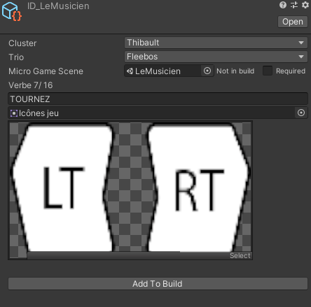

La plupart des étudiants devaient réaliser un mini-jeux chacun tandis que d'autres s'occupaient du jeu global. J’ai fait partie de l’équipe de 3 développeurs du jeu global. Ensemble nous avons dû : - préparer une documentation de programmation pour les mini-jeux. - organiser l’intégration de la trentaine de mini jeux - développer le jeu global.
J’ai réalisé des outils d’intégration pour faciliter la production des mini-jeux et leur intégration dans le jeu global. J’ai également réalisé des outils d’intégrations sonores et musicales pour que les Sound Designers n’aient que peu d’interaction avec le moteur. De plus à mi-projet j’ai été appelé pour créer des outils de QA afin qu’une équipe de QA puisse améliorer le jeu  Ici les développer n'avait qu'à référencer leur scène et leur nom puis a appuyé sur un bouton pour que leur jeu soit intégrer au jeu global.
- J’ai appris à organiser un projet pour 44 personnes dont certaines n'ayant peu ou pas de connaissances en programmation. - J’ai appris à créer une documentation claire et précise. - J’ai perfectionné ma connaissance sur la création d’outils sur Unity en créant des outils pour des disciplines pour lesquelles je n’en avais jamais créé comme le QA ou le Sound Design.